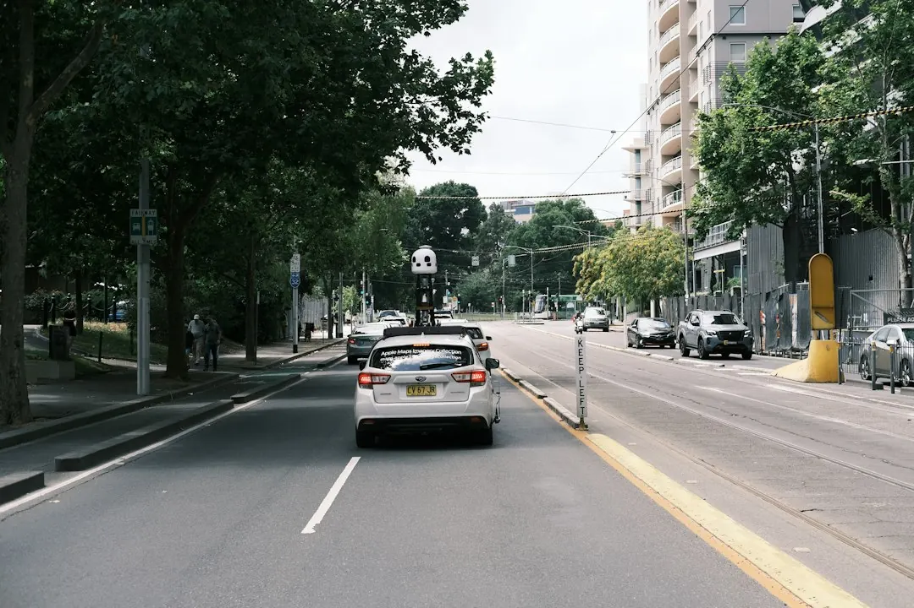

A home charger in Melbourne is usually a wall-mounted unit on its own circuit in a garage, carport or driveway. Installation choices depend on cable length, mounting location, charger type and switchboard condition. Three-phase units can deliver 11 to 22kW, although the vehicle may accept less. Victorian electrical work should be recorded on a Certificate of Electrical Safety, with a copy provided to the customer.
For households comparing ev charger installation melbourne options, the useful questions are where the car parks, how far the cable must run, what the switchboard can support and which charger suits the vehicle.
Ev Charger Installation Melbourne Explained
The most useful starting point is the car's overnight parking position. Ev Charger Installation Melbourne describes home units fitted in garages, carports or open driveways, with a dedicated circuit running to the charger. The distance from the switchboard and the wall or surface where the unit will be mounted can change the work involved.
Before requesting a quote, record whether the vehicle sits inside, under cover or outdoors. Note the approximate cable route, the wall type and whether access passes through another part of the property. A clear description helps an electrician assess the installation rather than pricing only the charger hardware.
- Identify the regular parking spot.
- Estimate the route back to the switchboard.
- Note whether the charger has already been purchased.
Check the switchboard and electrical supply
Older Melbourne homes can have switchboards that were not designed around overnight vehicle charging. A site assessment may therefore focus on the board, the available supply and the protection needed for a dedicated charger circuit. Newer estate homes may already be closer to the required arrangement, but the property still needs to be checked.
Look at the main switch and breakers without removing covers or altering anything. Record whether the supply appears single-phase or three-phase, and mention any connected solar panels or battery. These details help frame the right question: is a switchboard upgrade needed, or could load management and additional protection address the installation requirements?
Three-phase home chargers can deliver between 11 and 22kW, but the car's onboard charger may not use the full available output. Paying for a higher-capacity unit only makes sense when the vehicle, supply and charging routine support it.
Compare the charger choice with the home
A universal Type 2 charger, a Tesla Wall Connector and a solar-aware unit serve different household situations. The vehicle's connector, the preferred parking location and the home's existing energy setup should be considered together. If the unit is already bought, keep its model name available when asking for installation advice.
Solar-equipped homes can ask how a solar-aware charger would use surplus rooftop generation, and how that arrangement fits with the existing inverter or battery. Off-peak tariff windows may also be relevant to the charging schedule. These are design questions to settle before work begins, rather than assumptions to add after the quote.
| Situation | Useful question | Detail to confirm |
|---|---|---|
| Standard home charging | Where will the dedicated circuit run? | Parking position and cable distance |
| Three-phase supply | Can the vehicle accept the proposed output? | Vehicle onboard charging limit |
| Solar or battery home | How should charging use available generation? | Existing inverter, battery and tariff setup |
Apartments, townhouses and shared parking
A shared car park changes the project because the charger may need approval from the owners corporation, separate metering or a load-sharing arrangement. The route from a private meter or switchboard to the parking bay can also be less direct than in a detached home. Renters and unit owners should identify who controls the parking space, electrical infrastructure and permission process before seeking a final installation plan.
Ask for the approval steps in writing and confirm how electricity use will be measured. A quote should make clear whether it includes only the charger installation or also the electrical changes, metering work and shared-load equipment required by the property. Early answers can prevent a technically suitable charger from being delayed by unresolved building arrangements.
Paperwork and quote checks in Victoria
In Victoria, the electrician or Registered Electrical Contractor completing the work must issue a Certificate of Electrical Safety and provide the customer with a copy. Keep that document with the charger information and any product paperwork. The work also needs to follow AS/NZS 3000 wiring rules, including the relevant protection, cabling and installation methods for the circuit.
Compare quotations line by line. Look for the proposed charger, cable route, mounting position, switchboard work, load management, protection and certification. Ask which assumptions could change the price after the site is inspected. A lower total may simply exclude work that another quotation has included.
The next action is straightforward: submit the suburb, property type, parking location and charger details if known, then ask the installer to explain the supply, circuit and paperwork requirements for that home.
- Map the parking spot. Record whether the car uses a garage, carport or driveway and estimate the distance to the switchboard.
- Review the supply. Note the apparent single-phase or three-phase supply, the switchboard condition and any solar or battery connection.
- Choose the charger direction. Identify whether a Type 2 unit, Tesla Wall Connector or solar-aware charger suits the vehicle and household.
- Request a detailed quote. Provide the suburb, property type, parking location and charger model if known, then compare the included electrical work.
| Situation | Useful question | Detail to confirm |
|---|---|---|
| Standard home charging | Where will the dedicated circuit run? | Parking position and cable distance |
| Three-phase supply | Can the vehicle accept the proposed output? | Vehicle onboard charging limit |
| Solar or battery home | How should charging use available generation? | Existing inverter, battery and tariff setup |
Common questions
What usually changes the cost of a home charger installation? The main variables are cable-run length, mounting location, charger type and switchboard condition. Quotes can differ when one includes switchboard work or protection and another does not.
Can a three-phase charger deliver its full output to every vehicle? No. Three-phase units can deliver 11 to 22kW, but the vehicle's onboard charger may accept less. The car's charging limit should be checked before selecting the unit.
What paperwork should a Victorian customer receive? The electrician or Registered Electrical Contractor must issue a Certificate of Electrical Safety for the work and provide a copy to the customer.
What should apartment residents confirm first? Confirm owners corporation approval, metering, load sharing and control of the parking space before treating the installation as a standard private-home job.
This guide covers home charger location, electrical supply, charger selection, shared parking and Victorian installation paperwork.